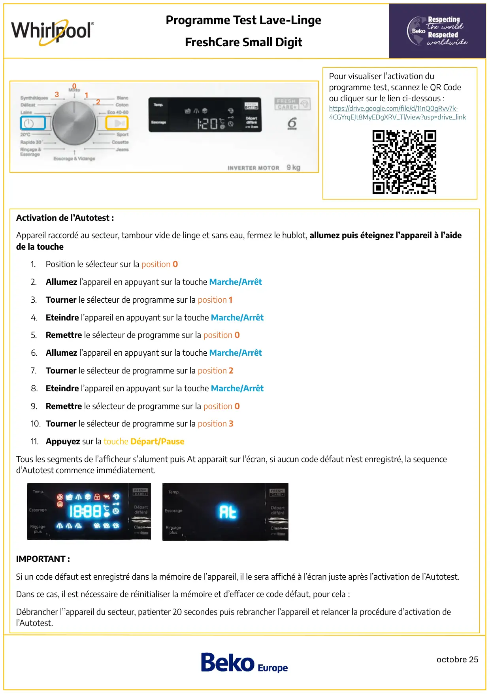
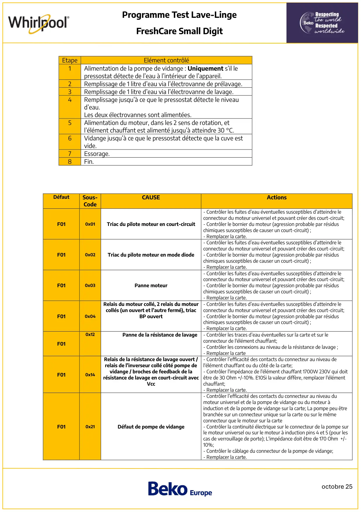
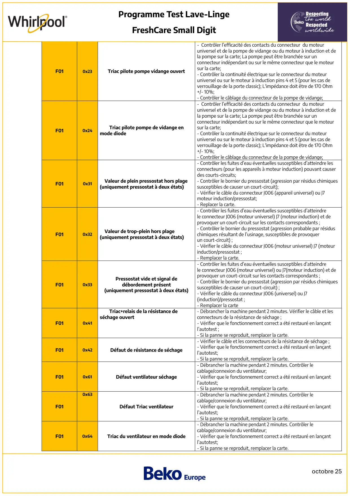
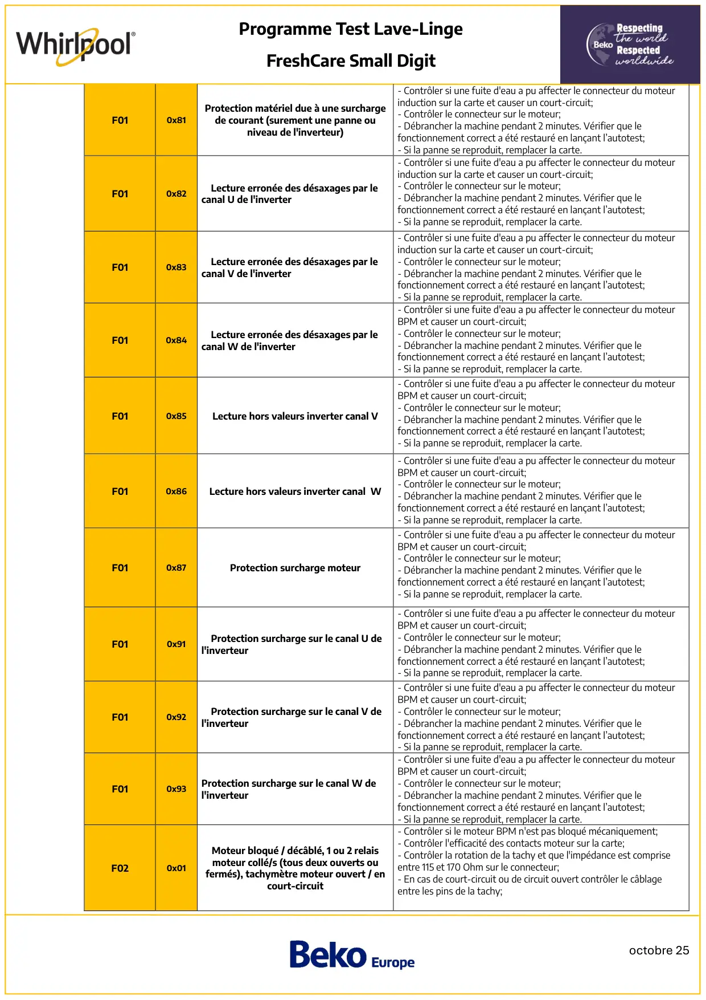
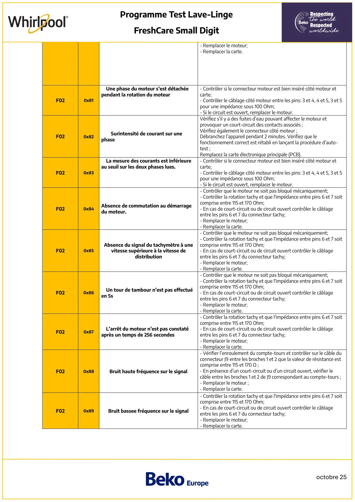
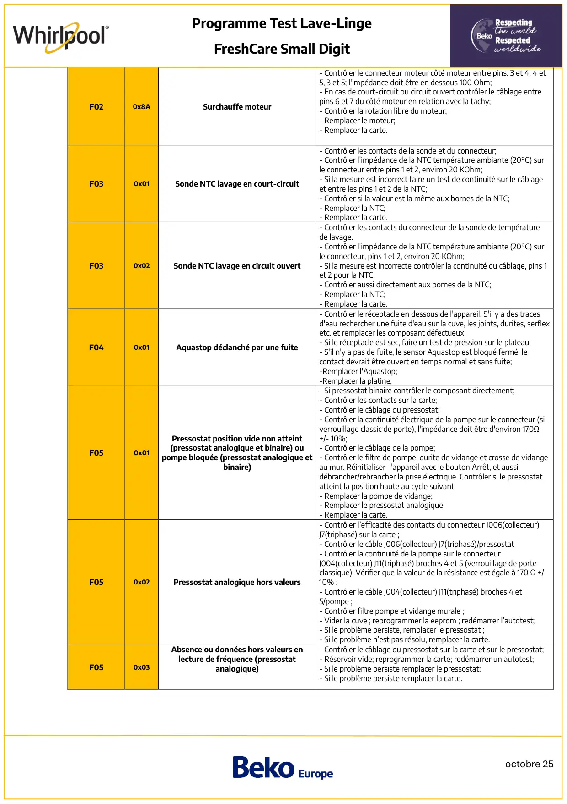
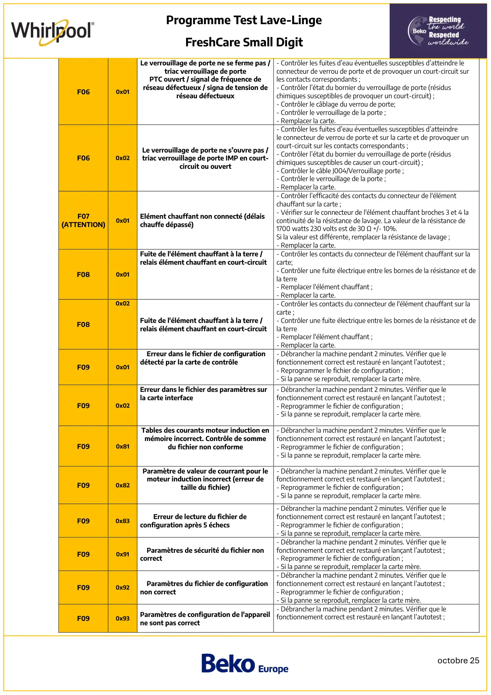
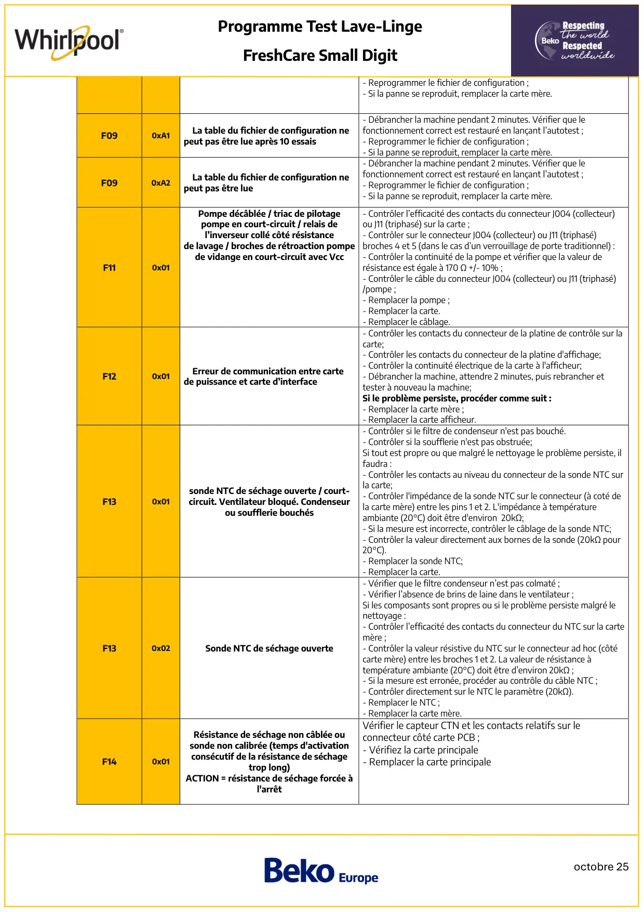
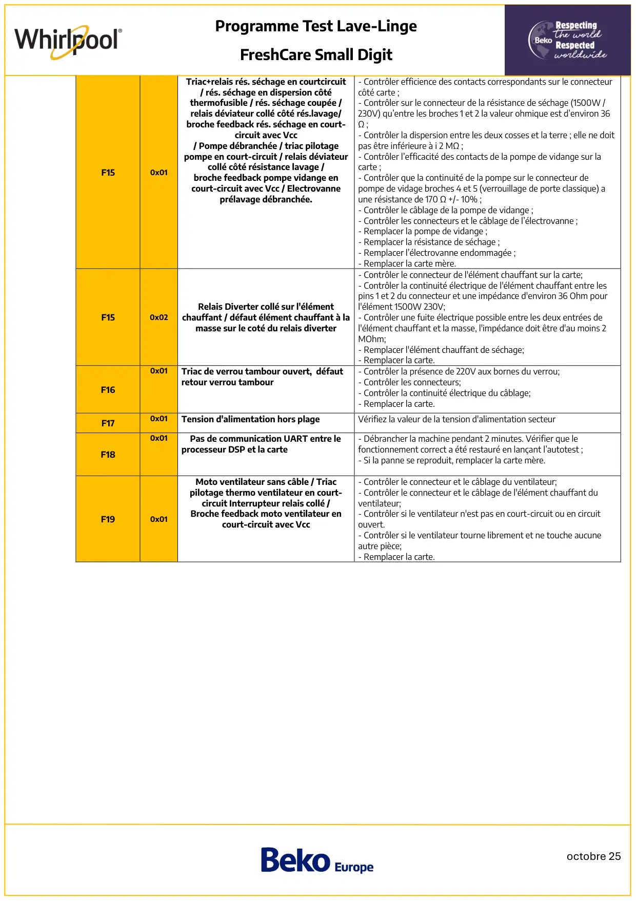

Prog Test lave linge Whirlpool FreshCare smallDigit

octobre 25Programme Test Lave-LingeFreshCare Small Digit1230Pour visualiser l’activation duprogramme test, scannez le QR Codeou cliquer sur le lien ci-dessous :https://drive.google.com/file/d/11nQ0gRvv7k-4CGYrqEJt8MyEDgXRV_Tl/view?usp=drive_linkActivation de l’Autotest :Appareil raccordé au secteur, tambour vide de linge et sans eau, fermez le hublot, allumez puis éteignez l’appareil à l’aidede la touche1.Position le sélecteur sur la position 02.Allumez l’appareil en appuyant sur la touche Marche/Arrêt3. Tourner le sélecteur de programme sur la position 14. Eteindre l’appareil en appuyant sur la touche Marche/Arrêt5. Remettre le sélecteur de programme sur la position 06. Allumez l’appareil en appuyant sur la touche Marche/Arrêt7.Tourner le sélecteur de programme sur la position 28. Eteindre l’appareil en appuyant sur la touche Marche/Arrêt9. Remettre le sélecteur de programme sur la position 010. Tourner le sélecteur de programme sur la position 311. Appuyez sur la touche Départ/PauseTous les segments de l’afficheur s’alument puis At apparait sur l’écran, si aucun code défaut n’est enregistré, la sequenced’Autotest commence immédiatement.IMPORTANT :Si un code défaut est enregistré dans la mémoire de l’appareil, il le sera affiché à l’écran juste après l’activation de l’Autotest.Dans ce cas, il est nécessaire de réinitialiser la mémoire et d’effacer ce code défaut, pour cela :Débrancher l’’appareil du secteur, patienter 20 secondes puis rebrancher l’appareil et relancer la procédure d’activation del’Autotest.
1 / 9
octobre 25Programme Test Lave-LingeFreshCare Small DigitDéfautSous-CodeCAUSEActionsF010x01Triac du pilote moteur en court-circuit- Contrôler les fuites d’eau éventuelles susceptibles d’atteindre leconnecteur du moteur universel et pouvant créer des court-circuit;- Contrôler le bornier du moteur (agression probable par résiduschimiques susceptibles de causer un court-circuit) ;- Remplacer la carte.F010x02Triac du pilote moteur en mode diode- Contrôler les fuites d’eau éventuelles susceptibles d’atteindre leconnecteur du moteur universel et pouvant créer des court-circuit;- Contrôler le bornier du moteur (agression probable par résiduschimiques susceptibles de causer un court-circuit) ;- Remplacer la carte.F010x03Panne moteur- Contrôler les fuites d’eau éventuelles susceptibles d’atteindre leconnecteur du moteur universel et pouvant créer des court-circuit;- Contrôler le bornier du moteur (agression probable par résiduschimiques susceptibles de causer un court-circuit) ;- Remplacer la carte.F010x04Relais du moteur collé, 2 relais du moteurcollés (un ouvert et l’autre fermé), triacBP ouvert- Contrôler les fuites d’eau éventuelles susceptibles d’atteindre leconnecteur du moteur universel et pouvant créer des court-circuit;- Contrôler le bornier du moteur (agression probable par résiduschimiques susceptibles de causer un court-circuit) ;- Remplacer la carte.F010x12Panne de la résistance de lavage- Contrôler les traces d’eau éventuelles sur la carte et sur leconnecteur de l'élément chauffant;- Contrôler les connexions au niveau de la résistance de lavage ;- Remplacer la carteF010x14Relais de la résistance de lavage ouvert /relais de l’inverseur collé côté pompe devidange / broches de feedback de larésistance de lavage en court-circuit avecVcc- Contrôler l’efficacité des contacts du connecteur au niveau del'élément chauffant ou du côté de la carte;- Contrôler l'impédance de l'élément chauffant 1700W 230V qui doitêtre de 30 Ohm +/-10%. E10Si la valeur diffère, remplacer l'élémentchauffant;- Remplacer la carte.F010x21Défaut de pompe de vidange- Contrôler l’efficacité des contacts du connecteur au niveau dumoteur universel et de la pompe de vidange ou du moteur àinduction et de la pompe de vidange sur la carte; La pompe peu êtrebranchée sur un connecteur unique sur la carte ou sur le mêmeconnecteur que le moteur sur la carte- Contrôler la continuité électrique sur le connecteur de la pompe surle moteur universel ou sur le moteur à induction pins 4 et 5 (pour lescas de verrouillage de porte); L'impédance doit être de 170 Ohm +/-10%;- Contrôler le câblage du connecteur de la pompe de vidange;- Remplacer la carte.EtapeElément contrôlé1Alimentation de la pompe de vidange : Uniquement s’il lepressostat détecte de l’eau à l’intérieur de l’appareil.2Remplissage de 1 litre d’eau via l’électrovanne de prélavage.3Remplissage de 1 litre d’eau via l’électrovanne de lavage.4Remplissage jusqu’à ce que le pressostat détecte le niveaud’eau.Les deux électrovannes sont alimentées.5Alimentation du moteur, dans les 2 sens de rotation, etl’élément chauffant est alimenté jusqu’à atteindre 30 °C.6Vidange jusqu’à ce que le pressostat détecte que la cuve estvide.7Essorage.8Fin.
2 / 9
octobre 25Programme Test Lave-LingeFreshCare Small DigitF010x23Triac pilote pompe vidange ouvert- Contrôler l’efficacité des contacts du connecteur du moteuruniversel et de la pompe de vidange ou du moteur à induction et dela pompe sur la carte; La pompe peut être branchée sur unconnecteur indépendant ou sur le même connecteur que le moteursur la carte;- Contrôler la continuité électrique sur le connecteur du moteuruniversel ou sur le moteur à induction pins 4 et 5 (pour les cas deverrouillage de la porte classic); L'impédance doit être de 170 Ohm+/- 10%;- Contrôler le câblage du connecteur de la pompe de vidange;F010x24Triac pilote pompe de vidange enmode diode- Contrôler l’efficacité des contacts du connecteur du moteuruniversel et de la pompe de vidange ou du moteur à induction et dela pompe sur la carte; La pompe peut être branchée sur unconnecteur indépendant ou sur le même connecteur que le moteursur la carte;- Contrôler la continuité électrique sur le connecteur du moteuruniversel ou sur le moteur à induction pins 4 et 5 (pour les cas deverrouillage de la porte classic); L'impédance doit être de 170 Ohm+/- 10%;- Contrôler le câblage du connecteur de la pompe de vidange;F010x31Valeur de plein pressostat hors plage(uniquement pressostat à deux états)- Contrôler les fuites d’eau éventuelles susceptibles d’atteindre lesconnecteurs (pour les appareils à moteur induction) pouvant causerdes courts-circuits;- Contrôler le bornier du pressostat (agression par résidus chimiquessusceptibles de causer un court-circuit);- Vérifier le câble du connecteur J006 (appareil universel) ou J7moteur induction/pressostat;- Replacer la carte.F010x32Valeur de trop-plein hors plage(uniquement pressostat à deux états)- Contrôler les fuites d’eau éventuelles susceptibles d’atteindrele connecteur J006 (moteur universel) J7 (moteur induction) et deprovoquer un court-circuit sur les contacts correspondants ;- Contrôler le bornier du pressostat (agression probable par résiduschimiques résultant de l’usinage, susceptibles de provoquerun court-circuit) ;- Vérifier le câble du connecteur J006 (moteur universel) J7 (moteurinduction/pressostat ;- Remplacer la carte.F010x33Pressostat vide et signal dedébordement présent(uniquement pressostat à deux états)- Contrôler les fuites d’eau éventuelles susceptibles d’atteindrele connecteur J006 (moteur universel) ou J7(moteur induction) et deprovoquer un court-circuit sur les contacts correspondants ;- Contrôler le bornier du pressostat (agression par résidus chimiquessusceptibles de causer un court-circuit) ;- Vérifier le câble du connecteur J006 (universel) ou J7(induction)/pressostat ;- Remplacer la carteF010x41Triac+relais de la résistance deséchage ouvert- Débrancher la machine pendant 2 minutes. Vérifier le câble et lesconnecteurs de la résistance de séchage ;- Vérifier que le fonctionnement correct a été restauré en lançantl’autotest ;- Si la panne se reproduit, remplacer la carte.F010x42Défaut de résistance de séchage- Vérifier le câble et les connecteurs de la résistance de séchage ;- Vérifier que le fonctionnement correct a été restauré en lançantl’autotest;- Si la panne se reproduit, remplacer la carte.F010x61Défaut ventilateur séchage- Débrancher la machine pendant 2 minutes. Contrôler lecablage/connexion du ventilateur;- Vérifier que le fonctionnement correct a été restauré en lançantl’autotest;- Si la panne se reproduit, remplacer la carte.F010x63Défaut Triac ventilateur- Débrancher la machine pendant 2 minutes. Contrôler lecablage/connexion du ventilateur;- Vérifier que le fonctionnement correct a été restauré en lançantl’autotest;- Si la panne se reproduit, remplacer la carte.F010x64Triac du ventilateur en mode diode- Débrancher la machine pendant 2 minutes. Contrôler lecablage/connexion du ventilateur;- Vérifier que le fonctionnement correct a été restauré en lançantl’autotest;- Si la panne se reproduit, remplacer la carte.
3 / 9
octobre 25Programme Test Lave-LingeFreshCare Small DigitF010x81Protection matériel due à une surchargede courant (surement une panne ouniveau de l'inverteur)- Contrôler si une fuite d'eau a pu affecter le connecteur du moteurinduction sur la carte et causer un court-circuit;- Contrôler le connecteur sur le moteur;- Débrancher la machine pendant 2 minutes. Vérifier que lefonctionnement correct a été restauré en lançant l’autotest;- Si la panne se reproduit, remplacer la carte.F010x82Lecture erronée des désaxages par lecanal U de l'inverter- Contrôler si une fuite d'eau a pu affecter le connecteur du moteurinduction sur la carte et causer un court-circuit;- Contrôler le connecteur sur le moteur;- Débrancher la machine pendant 2 minutes. Vérifier que lefonctionnement correct a été restauré en lançant l’autotest;- Si la panne se reproduit, remplacer la carte.F010x83Lecture erronée des désaxages par lecanal V de l'inverter- Contrôler si une fuite d'eau a pu affecter le connecteur du moteurinduction sur la carte et causer un court-circuit;- Contrôler le connecteur sur le moteur;- Débrancher la machine pendant 2 minutes. Vérifier que lefonctionnement correct a été restauré en lançant l’autotest;- Si la panne se reproduit, remplacer la carte.F010x84Lecture erronée des désaxages par lecanal W de l'inverter- Contrôler si une fuite d'eau a pu affecter le connecteur du moteurBPM et causer un court-circuit;- Contrôler le connecteur sur le moteur;- Débrancher la machine pendant 2 minutes. Vérifier que lefonctionnement correct a été restauré en lançant l’autotest;- Si la panne se reproduit, remplacer la carte.F010x85Lecture hors valeurs inverter canal V- Contrôler si une fuite d'eau a pu affecter le connecteur du moteurBPM et causer un court-circuit;- Contrôler le connecteur sur le moteur;- Débrancher la machine pendant 2 minutes. Vérifier que lefonctionnement correct a été restauré en lançant l’autotest;- Si la panne se reproduit, remplacer la carte.F010x86Lecture hors valeurs inverter canal W- Contrôler si une fuite d'eau a pu affecter le connecteur du moteurBPM et causer un court-circuit;- Contrôler le connecteur sur le moteur;- Débrancher la machine pendant 2 minutes. Vérifier que lefonctionnement correct a été restauré en lançant l’autotest;- Si la panne se reproduit, remplacer la carte.F010x87Protection surcharge moteur- Contrôler si une fuite d'eau a pu affecter le connecteur du moteurBPM et causer un court-circuit;- Contrôler le connecteur sur le moteur;- Débrancher la machine pendant 2 minutes. Vérifier que lefonctionnement correct a été restauré en lançant l’autotest;- Si la panne se reproduit, remplacer la carte.F010x91Protection surcharge sur le canal U del'inverteur- Contrôler si une fuite d'eau a pu affecter le connecteur du moteurBPM et causer un court-circuit;- Contrôler le connecteur sur le moteur;- Débrancher la machine pendant 2 minutes. Vérifier que lefonctionnement correct a été restauré en lançant l’autotest;- Si la panne se reproduit, remplacer la carte.F010x92Protection surcharge sur le canal V del'inverteur- Contrôler si une fuite d'eau a pu affecter le connecteur du moteurBPM et causer un court-circuit;- Contrôler le connecteur sur le moteur;- Débrancher la machine pendant 2 minutes. Vérifier que lefonctionnement correct a été restauré en lançant l’autotest;- Si la panne se reproduit, remplacer la carte.F010x93Protection surcharge sur le canal W del'inverteur- Contrôler si une fuite d'eau a pu affecter le connecteur du moteurBPM et causer un court-circuit;- Contrôler le connecteur sur le moteur;- Débrancher la machine pendant 2 minutes. Vérifier que lefonctionnement correct a été restauré en lançant l’autotest;- Si la panne se reproduit, remplacer la carte.F020x01Moteur bloqué / décâblé, 1 ou 2 relaismoteur collé/s (tous deux ouverts oufermés), tachymètre moteur ouvert / encourt-circuit- Contrôler si le moteur BPM n'est pas bloqué mécaniquement;- Contrôler l'efficacité des contacts moteur sur la carte;- Contrôler la rotation de la tachy et que l'impédance est compriseentre 115 et 170 Ohm sur le connecteur;- En cas de court-circuit ou de circuit ouvert contrôler le câblageentre les pins de la tachy;
4 / 9
octobre 25Programme Test Lave-LingeFreshCare Small Digit- Remplacer le moteur;- Remplacer la carte.F020x81Une phase du moteur s’est détachéependant la rotation du moteur- Contrôler si le connecteur moteur est bien inséré côté moteur etcarte;- Contrôler le câblage côté moteur entre les pins: 3 et 4, 4 et 5, 3 et 5pour une impédance sous 100 Ohm;- Si le circuit est ouvert, remplacer le moteur.F020x82Surintensité de courant sur unephaseVérifiez s’il y a des fuites d’eau pouvant affecter le moteur etprovoquer un court-circuit des contacts associés ;Vérifiez également le connecteur côté moteur ;Débranchez l’appareil pendant 2 minutes. Vérifiez que lefonctionnement correct est rétabli en lançant la procédure d’auto-test ;Remplacez la carte électronique principale (PCB).F020x83La mesure des courants est inférieureau seuil sur les deux phases lues.- Contrôler si le connecteur moteur est bien inséré côté moteur etcarte;- Contrôler le câblage côté moteur entre les pins: 3 et 4, 4 et 5, 3 et 5pour une impédance sous 100 Ohm;- Si le circuit est ouvert, remplacer le moteur.F020x84Absence de commutation au démarragedu moteur.- Contrôler que le moteur ne soit pas bloqué mécaniquement;- Contrôler la rotation tachy et que l'impédance entre pins 6 et 7 soitcomprise entre 115 et 170 Ohm;- En cas de court-circuit ou de circuit ouvert contrôler le câblageentre les pins 6 et 7 du connecteur tachy;- Remplacer le moteur;- Remplacer la carte.F020x85Absence du signal du tachymètre à unevitesse supérieure à la vitesse dedistribution- Contrôler que le moteur ne soit pas bloqué mécaniquement;- Contrôler la rotation tachy et que l'impédance entre pins 6 et 7 soitcomprise entre 115 et 170 Ohm;- En cas de court-circuit ou de circuit ouvert contrôler le câblageentre les pins 6 et 7 du connecteur tachy;- Remplacer le moteur;- Remplacer la carte.F020x86Un tour de tambour n’est pas effectuéen 5s- Contrôler que le moteur ne soit pas bloqué mécaniquement;- Contrôler la rotation tachy et que l'impédance entre pins 6 et 7 soitcomprise entre 115 et 170 Ohm;- En cas de court-circuit ou de circuit ouvert contrôler le câblageentre les pins 6 et 7 du connecteur tachy;- Remplacer le moteur;- Remplacer la carte.F020x87L’arrêt du moteur n’est pas constatéaprès un temps de 256 secondes- Contrôler la rotation tachy et que l'impédance entre pins 6 et 7 soitcomprise entre 115 et 170 Ohm;- En cas de court-circuit ou de circuit ouvert contrôler le câblageentre les pins 6 et 7 du connecteur tachy;- Remplacer le moteur;- Remplacer la carte.F020x88Bruit haute fréquence sur le signal- Vérifier l’enroulement du compte-tours et contrôler sur le câble duconnecteur J9 entre les broches 1 et 2 que la valeur de résistance estcomprise entre 115 et 170 Ω ;- En présence d’un court-circuit ou d’un circuit ouvert, vérifier lecâble entre les broches 1 et 2 de J9 correspondant au compte-tours ;- Remplacer le moteur ;- Remplacer la carte.F020x89Bruit bassee fréquence sur le signal- Contrôler la rotation tachy et que l'impédance entre pins 6 et 7 soitcomprise entre 115 et 170 Ohm;- En cas de court-circuit ou de circuit ouvert contrôler le câblageentre les pins 6 et 7 du connecteur tachy;- Remplacer le moteur;- Remplacer la carte.
5 / 9
octobre 25Programme Test Lave-LingeFreshCare Small DigitF020x8ASurchauffe moteur- Contrôler le connecteur moteur côté moteur entre pins: 3 et 4, 4 et5, 3 et 5; l'impédance doit être en dessous 100 Ohm;- En cas de court-circuit ou circuit ouvert contrôler le câblage entrepins 6 et 7 du côté moteur en relation avec la tachy;- Contrôler la rotation libre du moteur;- Remplacer le moteur;- Remplacer la carte.F030x01Sonde NTC lavage en court-circuit- Contrôler les contacts de la sonde et du connecteur;- Contrôler l'impédance de la NTC température ambiante (20°C) surle connecteur entre pins 1 et 2, environ 20 KOhm;- Si la mesure est incorrect faire un test de continuité sur le câblageet entre les pins 1 et 2 de la NTC;- Contrôler si la valeur est la même aux bornes de la NTC;- Remplacer la NTC;- Remplacer la carte.F030x02Sonde NTC lavage en circuit ouvert- Contrôler les contacts du connecteur de la sonde de températurede lavage.- Contrôler l'impédance de la NTC température ambiante (20°C) surle connecteur, pins 1 et 2, environ 20 KOhm;- Si la mesure est incorrecte contrôler la continuité du câblage, pins 1et 2 pour la NTC;- Contrôler aussi directement aux bornes de la NTC;- Remplacer la NTC;- Remplacer la carte.F040x01Aquastop déclanché par une fuite- Contrôler le réceptacle en dessous de l'appareil. S'il y a des tracesd'eau rechercher une fuite d'eau sur la cuve, les joints, durites, serflexetc. et remplacer les composant défectueux;- Si le réceptacle est sec, faire un test de pression sur le plateau;- S'il n'y a pas de fuite, le sensor Aquastop est bloqué fermé. lecontact devrait être ouvert en temps normal et sans fuite;-Remplacer l'Aquastop;-Remplacer la platine;F050x01Pressostat position vide non atteint(pressostat analogique et binaire) oupompe bloquée (pressostat analogique etbinaire)- Si pressostat binaire contrôler le composant directement;- Contrôler les contacts sur la carte;- Contrôler le câblage du pressostat;- Contrôler la continuité électrique de la pompe sur le connecteur (siverrouillage classic de porte), l'impédance doit être d'environ 170Ω+/- 10%;- Contrôler le câblage de la pompe;- Contrôler le filtre de pompe, durite de vidange et crosse de vidangeau mur. Réinitialiser l'appareil avec le bouton Arrêt, et aussidébrancher/rebrancher la prise électrique. Contrôler si le pressostatatteint la position haute au cycle suivant- Remplacer la pompe de vidange;- Remplacer le pressostat analogique;- Remplacer la carte.F050x02Pressostat analogique hors valeurs- Contrôler l’efficacité des contacts du connecteur J006(collecteur)J7(triphasé) sur la carte ;- Contrôler le câble J006(collecteur) J7(triphasé)/pressostat- Contrôler la continuité de la pompe sur le connecteurJ004(collecteur) J11(triphasé) broches 4 et 5 (verrouillage de porteclassique). Vérifier que la valeur de la résistance est égale à 170 Ω +/-10% ;- Contrôler le câble J004(collecteur) J11(triphasé) broches 4 et5/pompe ;- Contrôler filtre pompe et vidange murale ;- Vider la cuve ; reprogrammer la eeprom ; redémarrer l’autotest;- Si le problème persiste, remplacer le pressostat ;- Si le problème n’est pas résolu, remplacer la carte.F050x03Absence ou données hors valeurs enlecture de fréquence (pressostatanalogique)- Contrôler le câblage du pressostat sur la carte et sur le pressostat;- Réservoir vide; reprogrammer la carte; redémarrer un autotest;- Si le problème persiste remplacer le pressostat;- Si le problème persiste remplacer la carte.
6 / 9
octobre 25Programme Test Lave-LingeFreshCare Small DigitF060x01Le verrouillage de porte ne se ferme pas /triac verrouillage de portePTC ouvert / signal de fréquence deréseau défectueux / signa de tension deréseau défectueux- Contrôler les fuites d’eau éventuelles susceptibles d’atteindre leconnecteur de verrou de porte et de provoquer un court-circuit surles contacts correspondants ;- Contrôler l’état du bornier du verrouillage de porte (résiduschimiques susceptibles de provoquer un court-circuit) ;- Contrôler le câblage du verrou de porte;- Contrôler le verrouillage de la porte ;- Remplacer la carte.F060x02Le verrouillage de porte ne s’ouvre pas /triac verrouillage de porte IMP en court-circuit ou ouvert- Contrôler les fuites d’eau éventuelles susceptibles d’atteindrele connecteur de verrou de porte et sur la carte et de provoquer uncourt-circuit sur les contacts correspondants ;- Contrôler l’état du bornier du verrouillage de porte (résiduschimiques susceptibles de causer un court-circuit) ;- Contrôler le câble J004/Verrouillage porte ;- Contrôler le verrouillage de la porte ;- Remplacer la carte.F07(ATTENTION)0x01Elément chauffant non connecté (délaischauffe dépassé)- Contrôler l’efficacité des contacts du connecteur de l'élémentchauffant sur la carte ;- Vérifier sur le connecteur de l'élément chauffant broches 3 et 4 lacontinuité de la résistance de lavage. La valeur de la résistance de1700 watts 230 volts est de 30 Ω +/- 10%.Si la valeur est différente, remplacer la résistance de lavage ;- Remplacer la carte.F080x01Fuite de l'élément chauffant à la terre /relais élément chauffant en court-circuit- Contrôler les contacts du connecteur de l'élément chauffant sur lacarte;- Contrôler une fuite électrique entre les bornes de la résistance et dela terre- Remplacer l'élément chauffant ;- Remplacer la carte.F080x02Fuite de l'élément chauffant à la terre /relais élément chauffant en court-circuit- Contrôler les contacts du connecteur de l'élément chauffant sur lacarte ;- Contrôler une fuite électrique entre les bornes de la résistance et dela terre- Remplacer l'élément chauffant ;- Remplacer la carte.F090x01Erreur dans le fichier de configurationdétecté par la carte de contrôle- Débrancher la machine pendant 2 minutes. Vérifier que lefonctionnement correct est restauré en lançant l’autotest ;- Reprogrammer le fichier de configuration ;- Si la panne se reproduit, remplacer la carte mère.F090x02Erreur dans le fichier des paramètres surla carte interface- Débrancher la machine pendant 2 minutes. Vérifier que lefonctionnement correct est restauré en lançant l’autotest ;- Reprogrammer le fichier de configuration ;- Si la panne se reproduit, remplacer la carte mère.F090x81Tables des courants moteur induction enmémoire incorrect. Contrôle de sommedu fichier non conforme- Débrancher la machine pendant 2 minutes. Vérifier que lefonctionnement correct est restauré en lançant l’autotest ;- Reprogrammer le fichier de configuration ;- Si la panne se reproduit, remplacer la carte mère.F090x82Paramètre de valeur de courrant pour lemoteur induction incorrect (erreur detaille du fichier)- Débrancher la machine pendant 2 minutes. Vérifier que lefonctionnement correct est restauré en lançant l’autotest ;- Reprogrammer le fichier de configuration ;- Si la panne se reproduit, remplacer la carte mère.F090x83Erreur de lecture du fichier deconfiguration après 5 échecs- Débrancher la machine pendant 2 minutes. Vérifier que lefonctionnement correct est restauré en lançant l’autotest ;- Reprogrammer le fichier de configuration ;- Si la panne se reproduit, remplacer la carte mère.F090x91Paramètres de sécurité du fichier noncorrect- Débrancher la machine pendant 2 minutes. Vérifier que lefonctionnement correct est restauré en lançant l’autotest ;- Reprogrammer le fichier de configuration ;- Si la panne se reproduit, remplacer la carte mère.F090x92Paramètres du fichier de configurationnon correct- Débrancher la machine pendant 2 minutes. Vérifier que lefonctionnement correct est restauré en lançant l’autotest ;- Reprogrammer le fichier de configuration ;- Si la panne se reproduit, remplacer la carte mère.F090x93Paramètres de configuration de l'appareilne sont pas correct- Débrancher la machine pendant 2 minutes. Vérifier que lefonctionnement correct est restauré en lançant l’autotest ;
7 / 9
octobre 25Programme Test Lave-LingeFreshCare Small Digit- Reprogrammer le fichier de configuration ;- Si la panne se reproduit, remplacer la carte mère.F090xA1La table du fichier de configuration nepeut pas être lue après 10 essais- Débrancher la machine pendant 2 minutes. Vérifier que lefonctionnement correct est restauré en lançant l’autotest ;- Reprogrammer le fichier de configuration ;- Si la panne se reproduit, remplacer la carte mère.F090xA2La table du fichier de configuration nepeut pas être lue- Débrancher la machine pendant 2 minutes. Vérifier que lefonctionnement correct est restauré en lançant l’autotest ;- Reprogrammer le fichier de configuration ;- Si la panne se reproduit, remplacer la carte mère.F110x01Pompe décâblée / triac de pilotagepompe en court-circuit / relais del’inverseur collé côté résistancede lavage / broches de rétroaction pompede vidange en court-circuit avec Vcc- Contrôler l’efficacité des contacts du connecteur J004 (collecteur)ou J11 (triphasé) sur la carte ;- Contrôler sur le connecteur J004 (collecteur) ou J11 (triphasé)broches 4 et 5 (dans le cas d’un verrouillage de porte traditionnel) :- Contrôler la continuité de la pompe et vérifier que la valeur derésistance est égale à 170 Ω +/- 10% ;- Contrôler le câble du connecteur J004 (collecteur) ou J11 (triphasé)/pompe ;- Remplacer la pompe ;- Remplacer la carte.- Remplacer le câblage.F120x01Erreur de communication entre cartede puissance et carte d’interface- Contrôler les contacts du connecteur de la platine de contrôle sur lacarte;- Contrôler les contacts du connecteur de la platine d'affichage;- Contrôler la continuité électrique de la carte à l'afficheur;- Débrancher la machine, attendre 2 minutes, puis rebrancher ettester à nouveau la machine;Si le problème persiste, procéder comme suit :- Remplacer la carte mère ;- Remplacer la carte afficheur.F130x01sonde NTC de séchage ouverte / court-circuit. Ventilateur bloqué. Condenseurou soufflerie bouchés- Contrôler si le filtre de condenseur n'est pas bouché.- Contrôler si la soufflerie n'est pas obstruée;Si tout est propre ou que malgré le nettoyage le problème persiste, ilfaudra :- Contrôler les contacts au niveau du connecteur de la sonde NTC surla carte;- Contrôler l'impédance de la sonde NTC sur le connecteur (à coté dela carte mère) entre les pins 1 et 2. L'impédance à températureambiante (20°C) doit être d'environ 20kΩ;- Si la mesure est incorrecte, contrôler le câblage de la sonde NTC;- Contrôler la valeur directement aux bornes de la sonde (20kΩ pour20°C).- Remplacer la sonde NTC;- Remplacer la carte.F130x02Sonde NTC de séchage ouverte- Vérifier que le filtre condenseur n’est pas colmaté ;- Vérifier l’absence de brins de laine dans le ventilateur ;Si les composants sont propres ou si le problème persiste malgré lenettoyage :- Contrôler l’efficacité des contacts du connecteur du NTC sur la cartemère ;- Contrôler la valeur résistive du NTC sur le connecteur ad hoc (côtécarte mère) entre les broches 1 et 2. La valeur de résistance àtempérature ambiante (20°C) doit être d’environ 20kΩ ;- Si la mesure est erronée, procéder au contrôle du câble NTC ;- Contrôler directement sur le NTC le paramètre (20kΩ).- Remplacer le NTC ;- Remplacer la carte mère.F140x01Résistance de séchage non câblée ousonde non calibrée (temps d'activationconsécutif de la résistance de séchagetrop long)ACTION = résistance de séchage forcée àl'arrêtVérifier le capteur CTN et les contacts relatifs sur leconnecteur côté carte PCB ;- Vérifiez la carte principale- Remplacer la carte principale
8 / 9
octobre 25Programme Test Lave-LingeFreshCare Small DigitF150x01Triac+relais rés. séchage en courtcircuit/ rés. séchage en dispersion côtéthermofusible / rés. séchage coupée /relais déviateur collé côté rés.lavage/broche feedback rés. séchage en court-circuit avec Vcc/ Pompe débranchée / triac pilotagepompe en court-circuit / relais déviateurcollé côté résistance lavage /broche feedback pompe vidange encourt-circuit avec Vcc / Electrovanneprélavage débranchée.- Contrôler efficience des contacts correspondants sur le connecteurcôté carte ;- Contrôler sur le connecteur de la résistance de séchage (1500W /230V) qu’entre les broches 1 et 2 la valeur ohmique est d’environ 36Ω ;- Contrôler la dispersion entre les deux cosses et la terre ; elle ne doitpas être inférieure à i 2 MΩ ;- Contrôler l’efficacité des contacts de la pompe de vidange sur lacarte ;- Contrôler que la continuité de la pompe sur le connecteur depompe de vidage broches 4 et 5 (verrouillage de porte classique) aune résistance de 170 Ω +/- 10% ;- Contrôler le câblage de la pompe de vidange ;- Contrôler les connecteurs et le câblage de l’électrovanne ;- Remplacer la pompe de vidange ;- Remplacer la résistance de séchage ;- Remplacer l’électrovanne endommagée ;- Remplacer la carte mère.F150x02Relais Diverter collé sur l'élémentchauffant / défaut élément chauffant à lamasse sur le coté du relais diverter- Contrôler le connecteur de l'élément chauffant sur la carte;- Contrôler la continuité électrique de l'élément chauffant entre lespins 1 et 2 du connecteur et une impédance d'environ 36 Ohm pourl'élément 1500W 230V;- Contrôler une fuite électrique possible entre les deux entrées del'élément chauffant et la masse, l'impédance doit être d'au moins 2MOhm;- Remplacer l'élément chauffant de séchage;- Remplacer la carte.F160x01Triac de verrou tambour ouvert, défautretour verrou tambour- Contrôler la présence de 220V aux bornes du verrou;- Contrôler les connecteurs;- Contrôler la continuité électrique du câblage;- Remplacer la carte.F170x01Tension d'alimentation hors plageVérifiez la valeur de la tension d'alimentation secteurF180x01Pas de communication UART entre leprocesseur DSP et la carte- Débrancher la machine pendant 2 minutes. Vérifier que lefonctionnement correct a été restauré en lançant l’autotest ;- Si la panne se reproduit, remplacer la carte mère.F190x01Moto ventilateur sans câble / Triacpilotage thermo ventilateur en court-circuit Interrupteur relais collé /Broche feedback moto ventilateur encourt-circuit avec Vcc- Contrôler le connecteur et le câblage du ventilateur;- Contrôler le connecteur et le câblage de l'élément chauffant duventilateur;- Contrôler si le ventilateur n'est pas en court-circuit ou en circuitouvert.- Contrôler si le ventilateur tourne librement et ne touche aucuneautre pièce;- Remplacer la carte.
9 / 9